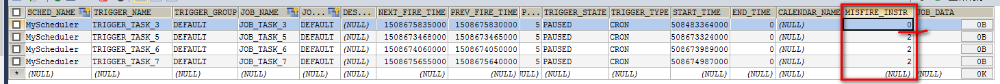

-█->> QuartzJob -█->> executeInternal -█->> (ScheduleJob)JobExecutionContext,getMergedJobDataMap().get("JOB_PARAM_KEY");
-█->> context.getMergedJobDataMap().get("JOB_PARAM_KEY"); -█->> 3
2017-10-22 20:36:40,013 [MyScheduler_Worker-7] [org.quartz.core.JobRunShell]-[ERROR] Job DEFAULT.JOB_TASK_3 threw an unhandled Exception:
java.lang.ClassCastException: java.lang.Long cannot be cast to top.qiaojianyong.dt_ssh.pojo.ScheduleJob
at top.qiaojianyong.dt_ssh.quartz.QuartzJob.executeInternal(QuartzJob.java:25)
at org.springframework.scheduling.quartz.QuartzJobBean.execute(QuartzJobBean.java:75)
at org.quartz.core.JobRunShell.run(JobRunShell.java:202)
at org.quartz.simpl.SimpleThreadPool$WorkerThread.run(SimpleThreadPool.java:573)
创建时采用的方式不同
//放入参数，运行时的JOB可以获取
/*job.getJobDataMap().put("JOB_PARAM_KEY", scheduleJob.getJobId());*/
// TODO IMPORTANT job.getJobDataMap().put("JOB_PARAM_KEY", scheduleJob);
//~~~~~~~~~~~~~~~~~~~~ JOB_PARAM_KEY --> scheduleJob ~~~~~~~~~~~~~~~~~~~~~~~
job.getJobDataMap().put("JOB_PARAM_KEY", scheduleJob);